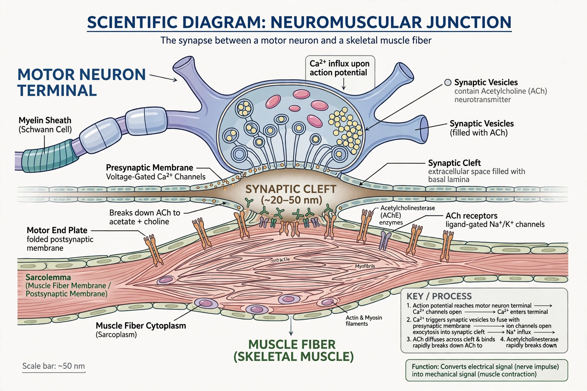

Neuromuscular junction

A neuromuscular junction (or myoneural junction) is a chemical synapse between a motor neuron and a skeletal muscle fibre. It is the structure through which signals from the nervous system trigger voluntary muscle contraction: the neuron releases the neurotransmitter acetylcholine, which binds receptors on the muscle cell membrane and initiates an action potential in the muscle fibre.
Structure
The axon of an alpha motor neuron branches as it approaches a muscle, each branch ending in a presynaptic terminal (synaptic bouton) that sits in a groove on the muscle fibre surface known as the motor end plate. The terminal contains synaptic vesicles loaded with acetylcholine and active zones aligned with junctional folds — deep invaginations of the muscle membrane (sarcolemma) that concentrate nicotinic acetylcholine receptors at their crests. Between neuron and muscle lies the synaptic cleft, about 50 nm wide, containing the enzyme acetylcholinesterase in its basal lamina.
Transmission
When an action potential reaches the terminal, voltage-gated calcium channels open; Ca²⁺ influx causes vesicles to fuse and release acetylcholine by exocytosis. Acetylcholine diffuses across the cleft and opens nicotinic receptors — ligand-gated cation channels — producing an end-plate potential. If this depolarisation reaches threshold, a muscle action potential propagates along the sarcolemma and down the T-tubules, triggering calcium release from the sarcoplasmic reticulum and contraction. Acetylcholinesterase rapidly hydrolyses acetylcholine, terminating the signal. Failure of this machinery contributes to post-mortem changes such as rigor mortis, in which ATP depletion prevents muscle relaxation.
Clinical significance
In myasthenia gravis, autoantibodies attack acetylcholine receptors, causing fatigable muscle weakness. Lambert–Eaton syndrome involves antibodies against presynaptic calcium channels. Many toxins and drugs act at the junction: botulinum toxin blocks acetylcholine release, curare and modern neuromuscular-blocking agents block receptors, and organophosphate nerve agents inhibit acetylcholinesterase. Congenital myasthenic syndromes arise from inherited defects in junctional proteins.
Development
Junctions form during embryonic development when motor axons contact muscle fibres; the protein agrin, released from the nerve, signals through MuSK to cluster acetylcholine receptors at the contact site. Activity-dependent competition refines the initially polyneuronal innervation to a single axon per fibre in mammals.